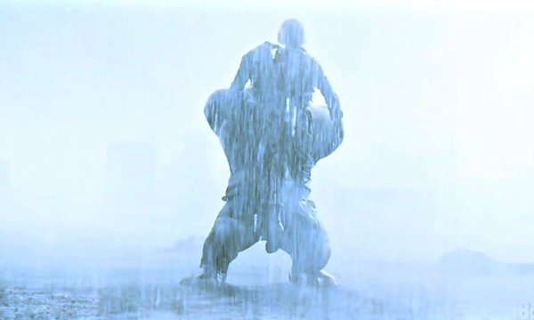
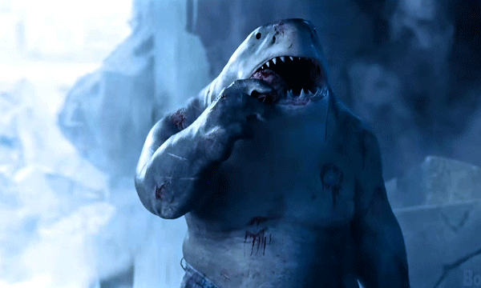
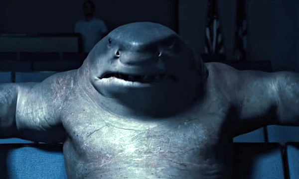

Quem é Nanaue?
Nanaue, também conhecido como Tubarão-Rei (ou King Shark, no original), é descendente de um deus-tubarão, dono de um vocabulário limitado e de uma fome insaciável. No início do filme, o peixe humanoide se mostra incapaz de diferenciar amigos de alimentos, referindo-se a todos, de maneira adorável, como “nom-noms”.
No entanto, ao longo da história, acompanhamos o desenvolvimento de um dos mais cativantes membros do Esquadrão Suicida. Suas trocas com a equipe, em especial com a Caça-Ratos II de Daniela Melchior, ajudam a construir um arco que o humaniza e deixa a audiência ansiosa por novas aparições divertidas do personagem.
Poderes e Habilidades
Nanaue é um dos brutamontes sanguinário que não se importa em dilacerar suas vitimas sejam elas quem forem, e para ajuda-lo nessa tarefa ele conta com algumas habilidades especiais como:
- Força e resistência sobre humana: Prova disso são seus vários embates contra seres como Superman e Lanterna Verde e se vc acredita que eles pegam “leve” tubarão rei já levou criaturas como Killer Croc a nocaute e nessa luta em especifico Croc só saiu vivo graças a ajuda do esquadrão suicida.
- Fator de cura e regeneração de membros perdidos: Ao longe de suas aventuras Nanaue já perdeu braços, pernas, órgãos ate mesmo um olho. Mas com o tempo certo tudo pode crescer novamente assim como sua arma mais poderosa seus dentes.
- Longevidade: Graças a seu pai Nanaue é um semideus e como tal, ele não morrerá por velhice ou doenças. A melhor forma de mata-lo seria em um combate, o que torna a tarefa ainda mais difícil.


